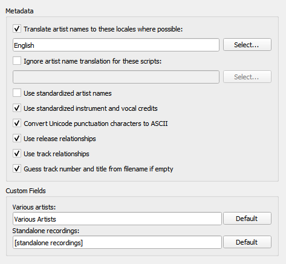

Metadata Options¶
{kind=link}
Translate artist names to this locale where possible
When checked, Picard will see whether an artist has an alias for the selected locale. If it does, Picard will use that alias instead of the artist name when tagging. When “English” is the selected locale, the artist sort name (which is, by Style Guideline, stored in Latin script) is used as a fallback if there is no English alias.
Use standardized artist names
Check to only use standard Artist names, rather than Artist Credits which may differ slightly across tracks and releases.
Note
If the “Translate artist names” option above is also checked, it will override this option if a suitable alias is found.
Use standardized instrument and vocal credits
Check to only use standard names for instruments and vocals in performer relationships. Uncheck to use the instruments and vocals as credited in the relationship.
Convert Unicode punctuation characters to ASCII
Converts Unicode punctuation characters in MusicBrainz data to ASCII for consistent use of punctuation in tags. For example, right single quotation marks are converted to ASCII apostrophes (‘), and horizontal ellipses are converted to three full stops (…).
Use release relationships
Check to retrieve and write release-level relationships (e.g.: URLs, composer, lyricist, performer, conductor, or DJ mixer) to your files. You must have this enabled to use Picard to retrieve cover art.
Use track relationships
Check to write track-level relationships (e.g.: composer, lyricist, performer, or remixer) to your files.
Various artists
Choose how you want the “Various Artists” artist spelled.
Non-album tracks
Choose how you want “non-album tracks” to be grouped.
See also
Details: Preferred Releases / Genres / Ratings